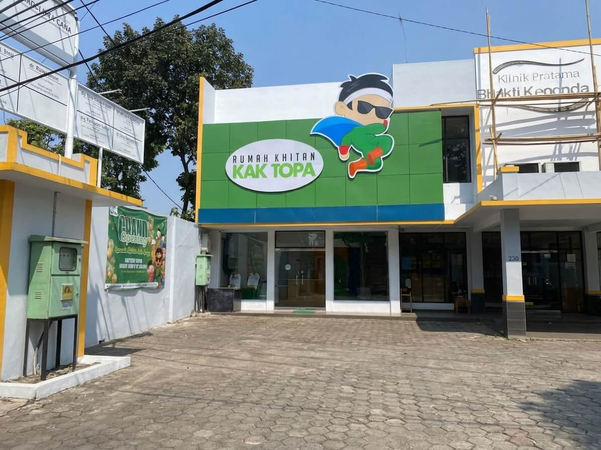
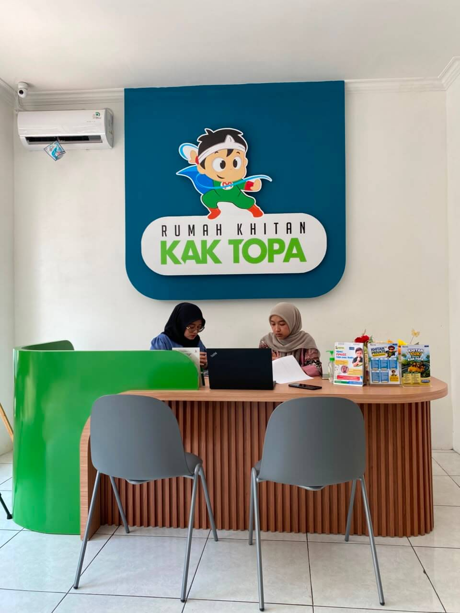
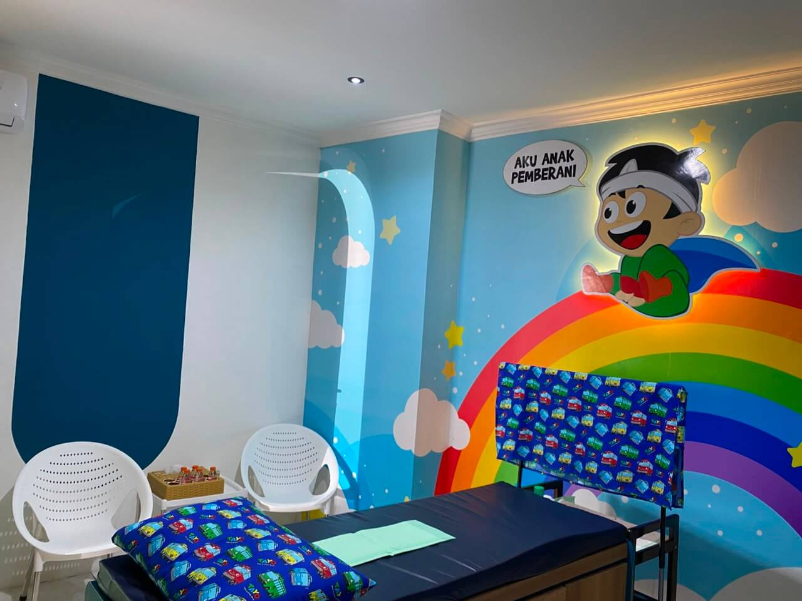
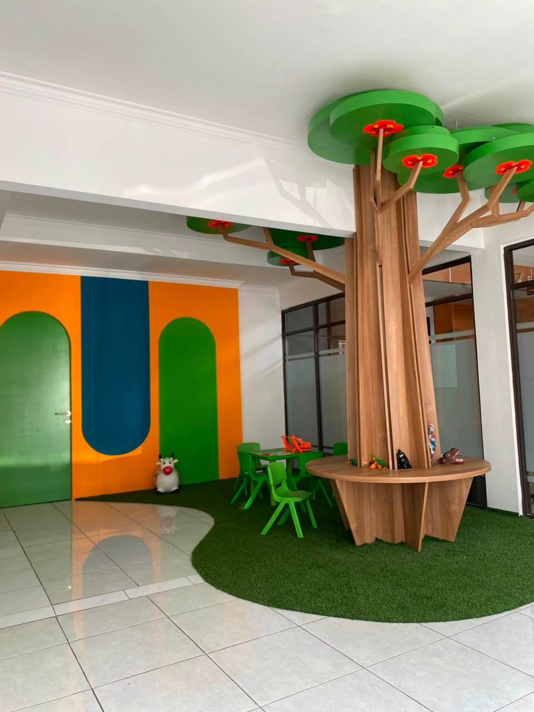
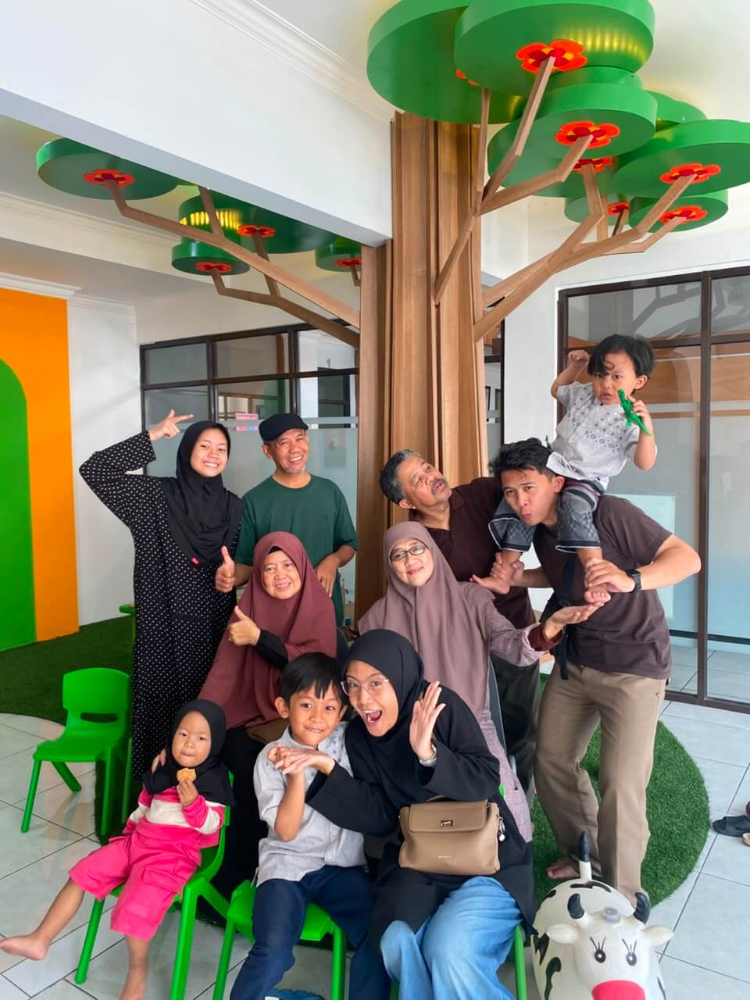
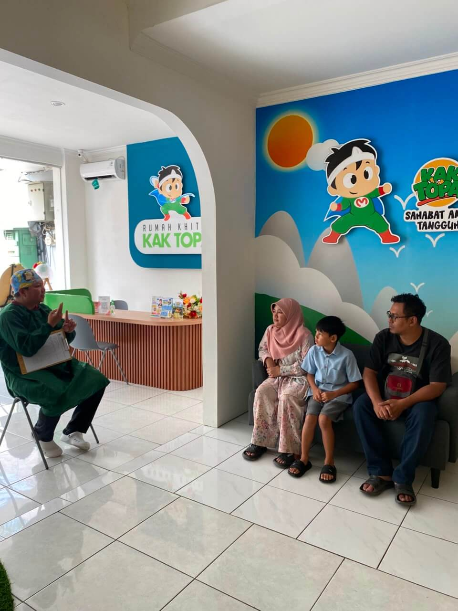
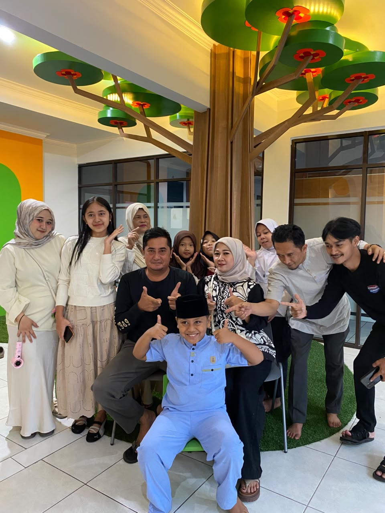
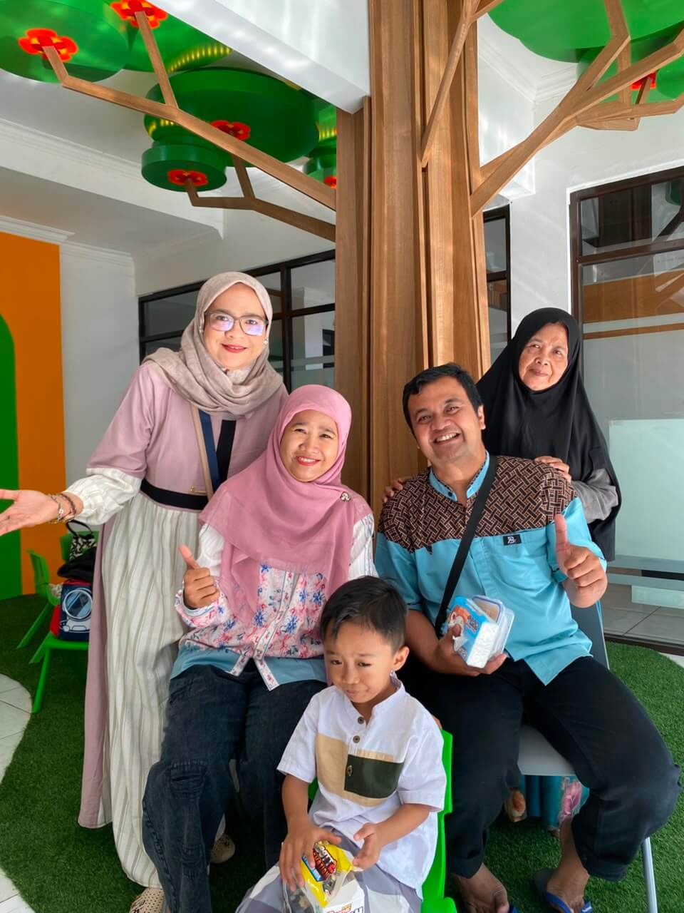
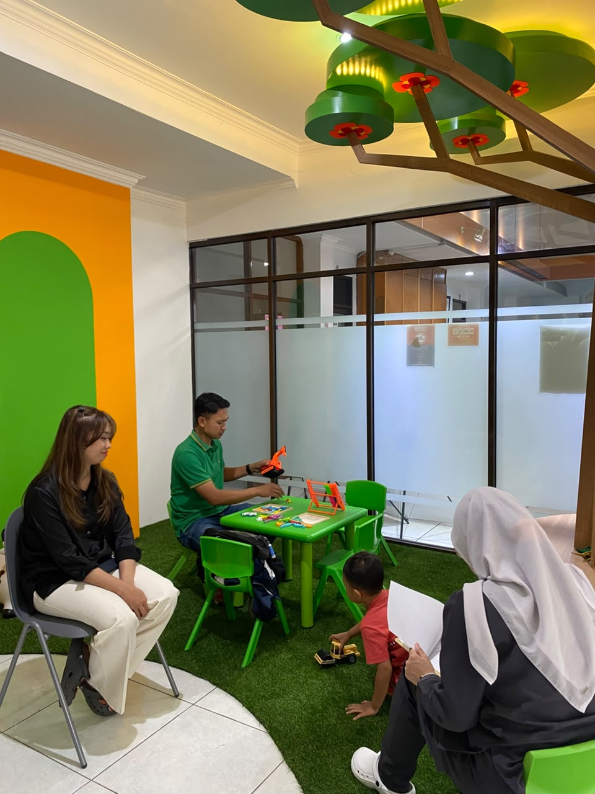

Khitan Private, Gak Pake Ribet
Layanan Eksklusif Khitan Modern untuk Bayi, Anak, Anak Gemuk & Dewasa. Menggunakan metode modern tersertifikasi, aman & nyaman dengan tim medis profesional berpengalaman.

Rumah Khitan Kak Topa adalah pelopor pusat layanan khitan modern di Bandung dan Garut. Kami hadir untuk mengubah persepsi sunat dari hal yang menakutkan menjadi pengalaman yang aman, nyaman, dan menyenangkan bagi anak maupun pria dewasa.
Dengan mengusung moto "Khitan Private, Gak Pake Ribet", kami menggunakan metode modern tersertifikasi yang minim nyeri dan tanpa harus dijahit, sehingga pasien dapat langsung beraktivitas normal.
Ditangani langsung oleh ahlinya secara eksklusif.
Fasilitas nyaman, menjaga psikologis anak agar tidak takut.
Penanganan khusus bayi (0-1 tahun) dan pasien sunat anak gemuk dengan alat presisi dan metode minim nyeri agar anak tetap tenang.
Khitan dewasa dengan penanganan profesional dan metode terbaik.
Menggunakan metode terkini seperti Laser, Stapler, dan lainnya.
Gratis kontrol dan konsultasi pasca khitan untuk pemulihan optimal.
Pelayanan premium dengan fasilitas dan standar eksklusif dari Rumah Khitan Kak Topa.
Orang tua wajib berada di sisi anak selama proses tindakan untuk memberi dukungan moral & kenyamanan psikologis.
Menggunakan alat khitan sekali pakai tersertifikasi medis untuk menjamin sterilitas 100% dan keamanan maksimal pasien.
Manajemen jadwal yang sangat ketat memastikan Anda langsung ditangani saat tiba di klinik.
Alokasi waktu penuh 1 jam per keluarga menjamin privasi ekstra tanpa terburu-buru.
Layanan kontrol intensif dan bebas biaya untuk pemulihan optimal secara berkelanjutan.
Biaya khitan transparan tanpa biaya tersembunyi. Semua paket sudah termasuk biaya tindakan oleh tim medis dan kontrol gratis sampai sembuh total.
Cocok untuk anak dengan kondisi normal menggunakan metode standar.
Metode sunat Klamp / Super Ring, pemulihan lebih cepat dan hasil estetik maksimal.
Penanganan khusus dengan fasilitas tambahan untuk kenyamanan pasien.
Metode Sealer Eksklusif untuk hasil terbaik dan privasi maksimal.
Metode khusus dewasa untuk pemulihan optimal tanpa ganggu aktivitas.
Momen kebersamaan dan pelayanan terbaik di Rumah Khitan Kak Topa.







Secara medis, khitan bisa dilakukan kapan saja sejak bayi. Semakin dini, proses penyembuhan biasanya lebih cepat. Namun secara psikologis, saat anak sudah siap dan berani (biasanya usia 5-10 tahun) juga sangat ideal.
Pastikan kondisi anak/pasien sehat (tidak demam/batuk parah). Sarapan secukupnya sebelum tindakan. Beri tahu anak tentang prosesnya secara positif agar mentalnya siap, hindari menakut-nakuti.
Tergantung metode yang dipilih. Metode Lem dan Klamp biasanya memungkinkan aktivitas ringan langsung setelah khitan, dengan luka mengering dalam 3-5 hari. Proses penyembuhan sempurna biasanya 1-2 minggu.
Silakan hubungi atau kunjungi cabang terdekat kami untuk layanan terbaik.